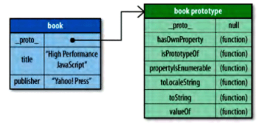

什么是原型
JavaScript 是一种 基于原型 的面向对象语言。 不同于基于类的面向对象语言，JavaScript中的面向对象是通过 原型对象 来实现的。原型对象可以看做一个模版，定义并实现了一个新对象所具有的成员（属性、方法）。每个对象都有一个原型，同时，每个对象又可作为其他对象的原型来使用。 一个对象通过一个内部属性绑定到它的原型。部分浏览器中（Firefox,Safari,Chrome)，这个内部属性是对外开放的，称作 __proto__，其他浏览器不允许脚本访问这一属性。
根据 ECMAScript 标准， someObject.[[Prototype]] 符号是用于指派 someObject 的原型。这个等同于 JavaScript 的 __proto__ 属性（现已弃用）。从 ECMAScript 6 开始, [[Prototype]] 可以用 Object.getPrototypeOf() 和 Object.setPrototypeOf() 访问器来访问。
新建一个内置类型的对象，如Object或Array，其原型为Object。例如，新建一个book对象，代码如下：
var book = {
title : "High Performance JavaScript" ,
publisher : "Yahoo! Press"
};
alert (book.toString ()); //"[object Object]"
book实例和原型的关系如下图： 
可以看出，在JavaScript的对象中，存在两种类型的成员，分别为 *自定义成员* 和 *原型成员* 。自定义成员直接存储在对象本身，原型成员继承自对象的原型。当调用一个对象的成员时，先从对象的自定义成员中查找，如果没有匹配的成员，再从对象的原型成员中查找。
可以用in来遍历对象的所有成员，用hasOwnProperty()方法筛选出所有的自定义成员：
function keys(object){
var key,result;
result = [];
for(var key in object){
if (object.hasOwnProperty(key)){
result.push(key);
}
}
return result;
}
==原型链== ==对象的创建==